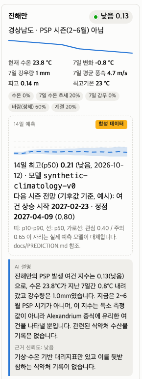

What the K-Food Safety Watch repository already gives you, what a real predictive model must produce, how to get from a weather heuristic to a backtested forecast, and which parts of that work belong to the scientist, the engineer and the AI.

The repository now has a slot for a forecast: a fixed JSON shape per bay, a page that draws it with an uncertainty band, and tests that enforce it. A synthetic generator fills the slot today and is badged SYNTHETIC everywhere. Your team's job is to replace one function with a model that has been backtested against real NIFS toxin history. Before any modelling, write a one-page target specification: what counts as an event, at which stations, with what lead time. Climb the ladder from climatology to a heuristic to logistic regression to gradient boosting, and never let a rung ship unless it beats the one below on the same backtest. The scientist owns the target, the labels and the evaluation; the engineer owns the data pipes; Claude Code builds and documents; the Claude API explains. The statistical model is ordinary statistics, not a language model.
The primary guide explains how the K-Food Safety Watch app was built and how to run it. It is for one person learning a working method. This document is different. It is for a team that will try to predict shellfish toxin events, and it is about the gap between the proof of concept on the page and a forecast someone could act on.
The request that produced it, verbatim:
Read it alongside three files in the repository: docs/ENVIRONMENT.md (the conditions index), docs/PREDICTION.md (the forecast contract), and src/kfs/predict.py (the synthetic filler). Nothing here requires you to read code, but every claim here can be checked against those files.
Own the question, not the keyboard. In a prediction project that means: the scientist writes the target specification, chooses the labels, and judges the backtest. Everything else can be delegated, including to Claude. Nothing in this document changes that; it just shows how much of the question there is to own.
| Phase | What it does | What it teaches |
|---|---|---|
| 1 · Recalls | MFDS recalls and failed inspections, enriched by Claude, on a bilingual map and list. | Public API, one AI judgement step, deterministic code for the rest, a local HTML result, a repo that explains itself. |
| 2 · Environment | Eight south-coast bays scored for bloom-favourable conditions from seven days of Open-Meteo sea temperature, rainfall and wind, with a Claude advisory per bay. | A heuristic index is a legitimate first model if it is explicit, tested and honest about what it is not. In October it says "low, out of season", which is the right answer. |
| 3 · Forecast slot | Each bay carries a 14-day forecast of the index with a p10–p90 band and a next-season outlook, generated synthetically and badged as such. | Build the interface before the model. The page, the data file, the tests and the documentation now all exist. The model replaces one function. |
The screenshot on the cover is one bay card. Reading it top to bottom: observed conditions and a sparkline of the week's sea temperature; the five factors of the index; the forecast block with its dashed line, shaded band and SYNTHETIC badge; the Claude advisory, which deliberately does not see the synthetic forecast.
It is not a prediction. The synthetic generator blends today's observed sea temperature toward a climatology, lets rainfall relax toward its monthly mean, assumes wind persistence, and scores each future day with the same index as the tab. It will look plausible. It has no skill, and it has never been compared to a single real toxin event. That is why it is badged, why the model name is printed on every card, and why the advisory prompt is not allowed to read it.
Every bay's forecast is one JSON object with a fixed shape. The page draws it, the tests enforce it, and the model you build must produce it.
{
"model": "synthetic-climatology-v0",
"issued_at": "2026-10-09",
"synthetic": true,
"horizon": [
{"date": "2026-10-10", "p10": 0.07, "p50": 0.14, "p90": 0.20, "level": "low"},
... fourteen daily points ...
],
"season_outlook": {
"first_favourable": "2027-02-23",
"peak": "2027-04-09",
"peak_index": 0.80,
"basis": "climatology only; illustrative"
}
}p10, p50, p90 are quantiles of the conditions index, or later of the event probability, in [0, 1]. A model that cannot express uncertainty emits three equal values and says so in model. The page will draw a line with no band, which is itself information.level derives from p50 with the thresholds the tab already uses: 0.40 moderate, 0.65 elevated. When the target changes from "conditions" to "event probability", the thresholds change and the expert sets them.synthetic stays true until a model with a documented backtest ships. The badge is driven by this flag alone.model names the exact version and is printed on the card. Anyone looking at the page can tell which model produced what they see.kfs.predict.forecast and nothing else moves.Because it lets five things proceed in parallel instead of in sequence: the page design, the documentation, the tests, the evaluation harness, and the data pipelines. It also forces a decision that modelling teams often postpone until it is painful: what, exactly, is the output? Fourteen daily quantiles per bay is a decision. Having made it in an afternoon, the team can argue about it on Monday with something concrete in front of them.
The first run of the synthetic generator reported "first favourable window: 12 November". A cooling autumn sea passes down through the same temperature band that a warming spring sea passes up through, and the index scored them the same. The fix was one line: require a rising trend. The lesson is not the line. It is that a scientist read the output and said "that is wrong" within a minute of seeing it, which no amount of code review would have caught.
The single most consequential document the team will write is one page long and contains no code: the target specification. Until it exists, every hour spent on data or models is speculative.
The scientist writes this page. Claude Code can help draft it, by reading the NIFS bulletin format and summarising what is actually recorded, but the decisions in it are not delegable.
Verified during the session: Open-Meteo answers from Seoul without a key, there is no public API for NIFS toxin bulletins, and KHOA buoy data and the NIFS red-tide bulletin are on data.go.kr behind a free key. Everything else in this table is from general knowledge and must be checked by the team before being relied on.
| Source | What it gives | Access and caveats |
|---|---|---|
| NIFS 패류독소 발생현황 (shellfish toxin status) | Station, date, species, toxin type, concentration, closure status. The primary label. | Web pages, no API found. Request a historical extract from NIFS directly; a Korean team can. Expect format changes over years and station renames. |
| NIFS 적조속보 (red-tide bulletins) | Area, causative organism, cell density, water temperature, outlook. A secondary label and a feature. | data.go.kr API (dataset 15156746), free key. Text fields need parsing; Claude is good at that. |
| MFDS seafood recalls and inspection failures | Product-level enforcement that sometimes follows an event. | Already in the repo. A weak, lagged confirmation, not a label. |
| Source | Variables | Access and caveats |
|---|---|---|
| KHOA 바다누리 coastal stations | Sea temperature, salinity, tide, in near real time; history by station. | data.go.kr key. Station coverage of the small bays is uneven; check which stations are actually near which monitoring sites. |
| KMA ASOS / AWS | Rainfall, wind, sunshine hours, air temperature, at dense land stations with long history. | data.go.kr key or the KMA API hub. Long, clean history: the best-behaved source here. |
| River discharge (WAMIS) | Freshwater input to the bays, a nutrient and stratification driver. | National water resources portal. Only some bays have a gauged river. |
| Satellite chlorophyll (GOCI-II via KIOST; Copernicus Marine) | Phytoplankton biomass as a leading indicator. | Cloud gaps, coastal pixel contamination. Worth it, but as the second feature set, not the first. |
| Open-Meteo historical archive | Reanalysis weather back decades; marine history shorter. | Keyless. A fallback for gaps and the fastest way to build a first feature table before the Korean keys arrive. |
Leakage. A closure announcement is dated when it is published, not when the water was sampled, and the sample lags the bloom. If the feature window reaches up to the announcement date, the model learns to see the bloom that caused the announcement, and its backtest looks wonderful. Anchor every feature window to the sampling date minus the lead time, and have the scientist confirm the lag structure before the first model is fitted.
Climb it one rung at a time. Each rung must beat the one below on the same backtest, or it does not ship. Skipping rungs is how teams end up with an impressive model that cannot beat "it is April".
p10 and p90 honestly. Often the practical ceiling for a dataset of this size. Requires more discipline about leakage and cross-validation, not more data science.At every rung, the output is written into the same contract from Section 3 and appears on the same page. The team can see rung 1 and rung 2 side by side on the cards if it wants to, by running two model versions and printing both names.
A model is a claim about the future. Evaluation is how the claim is checked, and it is the part of the project that cannot be delegated to the people who built the model, nor to the AI that helped them.
| Metric | What it answers |
|---|---|
| Hit rate and false-alarm rate at the chosen threshold | Of real events, how many were flagged in time? Of flags, how many were wrong? The two numbers the harvesters and the regulators will ask about. |
| Brier score and skill against climatology | How good are the probabilities overall, and how much better than "it is April"? |
| Reliability diagram | When the model says 30%, does it happen about 30% of the time? If not, the probability is a decoration. |
| Lead-time curve | How does skill decay from 1 day ahead to 14? Tells you what the honest horizon is, which may be shorter than the contract's fourteen points. |
The primary guide's Exercise 5 asks the scientist to label twenty records by hand and compare them with the model's answers. The same habit applies here. Before the first backtest number is believed, the scientist should take one past season, walk through it week by week with the forecast in one hand and the NIFS record in the other, and write down every disagreement and what caused it. Most model improvements come from that walk, not from the metrics table.
The page already draws the line the team must hold: observed conditions are one thing, forecasts are another, and neither is a toxin measurement or a safety claim. Keep every one of these when the real model arrives.
p10 to p90 as a shaded band. A real model's band will be wider than the synthetic one, and that is a feature. A narrow band from a model with no skill is the most dangerous object in this project.src/kfs/advisory.py already enforces this for Claude's text; the same list applies to humans writing labels.Today the Claude advisory deliberately does not see the forecast, because the forecast is invented. When a backtested model exists, add its output to the advisory input and add two sentences to the system prompt: what the model is, and how much weight to give it relative to observed conditions. Then re-run Exercise 5 on the advisories themselves.
Writes the data pipelines for each new source, with the same probe-first habit used for MFDS and Open-Meteo. Writes the feature code, the label-parsing code for NIFS bulletins, the backtest harness that enforces the no-future-data rule by construction, and the tests. Keeps PLAN.md, the docs and the prompt log current. Drafts the target specification from the bulletin format for the scientist to correct.
Prompt shape, unchanged: context, goal, constraints, "report back with a plan before changing code".
Writes the bilingual advisories. Parses free-text fields in red-tide bulletins into structured records. Explains a forecast in plain language to a harvester or an official. Summarises a season's disagreements between model and record for the review meeting.
Does not make the forecast. The statistical model is ordinary statistics: scikit-learn, LightGBM, a few hundred lines. Asking a language model to guess next week's toxin probability from numbers is slower, costlier, unreproducible and unbacktestable. Use the right tool.
| Role | Owns | Typical person |
|---|---|---|
| Scientific lead | Target specification, label definitions, thresholds, the season walk-through, the decision to remove the SYNTHETIC badge. | The food-safety scientist. |
| Data engineer | Keys, pipelines, feature table, data quality, the repo. | The Gen MZ partner from the primary guide, working with Claude Code. |
| Modeller | Rungs 0 to 3, the backtest harness, calibration. | Someone with applied statistics; can be the engineer with Claude Code's help at rungs 0 to 2. |
| Domain reviewers | Reading forecasts against lived experience each week of the season. | NIFS or local fisheries contacts, harvesters. |
| Weeks | Deliverable |
|---|---|
| 1–2 | Target specification signed by the scientific lead. data.go.kr keys. Historical NIFS extract requested. Station list replaces the eight hand-placed bays. |
| 3–5 | Label table and feature table, with the lag structure written down. Rung 0 baselines and the backtest harness. First honest number: how hard is this? |
| 6–8 | Rung 1 evaluated; thresholds revised. Rung 2 fitted and backtested. Season walk-through for one past year. |
| 9–10 | Rung 3 with quantile outputs. Reliability checked. Lead-time curve sets the honest horizon. |
| 11–12 | Best rung wired into the contract. Advisory prompt updated. Checklist in Section 11 worked through. Decision on the badge. Everything in the repo. |
This is a plan for a first honest model, not a finished product. A second season of live forecasts, reviewed weekly, is what turns it into a tool.
model names a version that is tagged in the repository.Switch synthetic to false, consider an EXPERIMENTAL badge for the first live season, and keep the weekly walk-through going. The model is not the product. The habit of checking it is.
Sources and attributions. Data on the page: 식품의약품안전처 식품안전나라; Open-Meteo (CC BY 4.0); KOSTAT boundaries via southkorea-maps; Esri World Street Map tiles; Leaflet. Model used for advisories: Claude Opus 5.5. This document was drafted by Claude Code from the session that built phases 2 and 3 and reviewed by its author. Data-source availability other than Open-Meteo, data.go.kr listings and the absence of a public NIFS toxin API was not verified in-session and must be checked by the team.